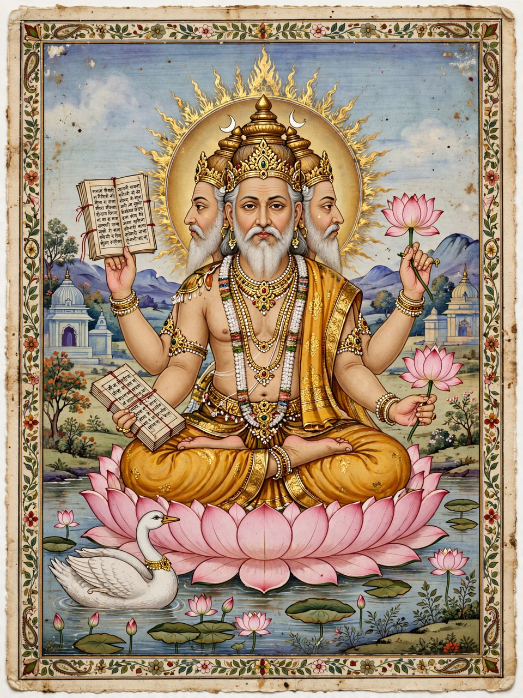

Brahma is the Hindu creator god, one of the Trimurti alongside Vishnu and Shiva. He is not to be confused with Brahman, the ultimate reality, or Brahmin, the priestly caste.

| Affiliation | Trimurti, Deva |
|---|---|
| Abode | Brahmaloka |
| Consort | Saraswati |
| Vehicle | Hamsa (swan/goose) |
Brahma is depicted with four faces and four arms, often seated on a lotus emerging from Vishnu's navel, holding the Vedas, a rosary, a water pot and a sacrificial ladle. His vahana is the hamsa.
In Puranic cosmology Brahma creates the universe at the start of each cosmic cycle (kalpa); a day of Brahma lasts 4.32 billion years. Stories explain his four (originally five) heads and why he is worshipped less widely than Vishnu and Shiva, including curses by Shiva and others.
Few temples are dedicated solely to Brahma; the most famous is at Pushkar in Rajasthan, with another notable shrine at Kumbakonam. He is honoured, however, in Hindu temples generally and in Southeast Asian traditions.